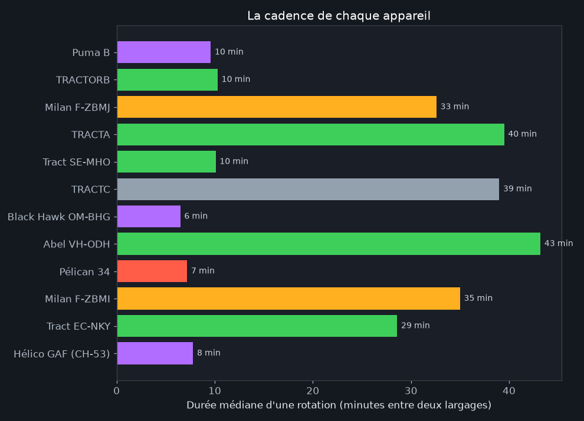
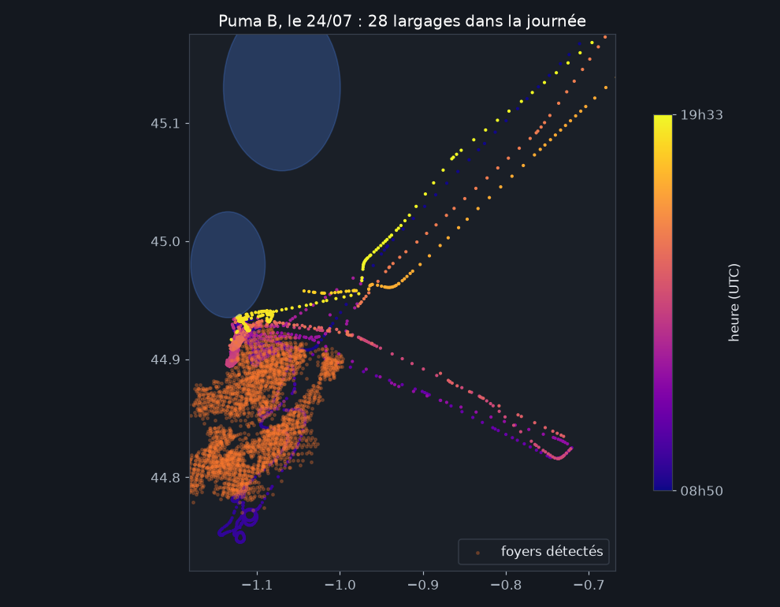
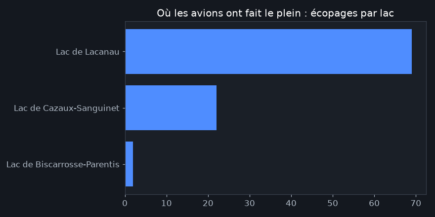
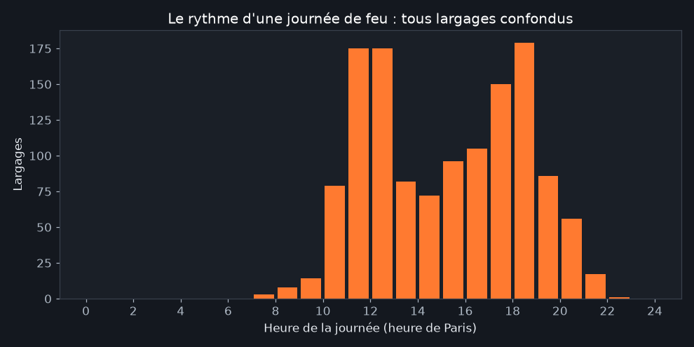

Écoper, larguer, recommencer : le rendement des norias
Publié le 31 juillet 2026 · Mis à jour le 1er août 2026
Une "noria", dans le jargon des pompiers du ciel, c'est la boucle sans fin d'un appareil entre sa source d'eau et le feu. Sa cadence, c'est le nerf de la guerre : chaque minute gagnée par rotation, ce sont des milliers de litres de plus sur les flammes chaque jour. Nous avons reconstitué ces boucles à partir de 2,4 millions de positions d'aéronefs : voici ce que ça donne, appareil par appareil.
Trois familles, trois cadences

Le graphique révèle trois mondes qui coexistent au-dessus du même feu :
- Les hélicoptères : une rotation toutes les 6 à 10 minutes. Le CH-53 allemand (6,1 min), le Black Hawk slovaque (6,5 min) et le Puma français (9,2 min) remplissent leur réservoir souple dans le premier plan d'eau venu, à côté du feu. Peu de volume par largage, mais un martèlement continu.
- Les amphibies : 7 à 10 minutes quand le lac est à côté. Le Canadair Pélican 34 (7,2 min) et les Air Tractor "Fire Boss" à flotteurs (TRACTORB : 10,3 min, SE-MHO : 8,5 min) écopent en glissant sur le lac de Lacanau, à 2 minutes de vol du front. C'est l'atout géographique de ce feu.
- Les gros porteurs de retardant : 30 à 40 minutes. Les Dash 8 "Milan" (~33 min) doivent retourner se recharger en retardant à l'aéroport après chaque largage. Moins fréquents, mais 10 000 litres d'un produit qui continue d'agir après évaporation : un autre métier.
Le champion du jour : 28 largages en une journée

Le 24 juillet, au plus fort de l'incendie, l'hélicoptère militaire Puma B a enchaîné 28 largages. Sa trajectoire dessine une pelote serrée contre le front : là où un avion doit prendre de l'élan, s'aligner, larguer en passant, l'hélicoptère pivote sur place et revient. Sur un front qui menace des maisons, cette agilité est irremplaçable.
Les lacs, stations-service du feu

Le lac de Lacanau a été la pompe à eau du feu du Médoc : les trois quarts des écopages détectés. Une noria Lacanau → front durait moins de 10 minutes : c'est précisément ce qui a permis de tenir les lisières est pendant les pires journées. Au sud, Cazaux-Sanguinet a joué le même rôle pour le feu de Biscarrosse.
Une journée de feu, heure par heure

Le ballet suit le soleil : premiers largages vers 9 h, montée en puissance jusqu'au pic de fin d'après-midi : le moment où la chaleur et le vent rendent le feu le plus agressif : puis arrêt quasi total à la nuit tombée, les opérations aériennes de nuit restant exceptionnelles. Le feu, lui, ne dort pas : c'est la fenêtre où les équipes au sol prennent le relais.
Les stakhanovistes de l'épisode

Air Tractor "Fire Boss" VH-OUM 🇦🇺
144 largages · rotation 10,3 min
le métronome australien
photo © Sierra Mike · planespotters.net

Dash 8 "Milan" F-ZBMJ 🇫🇷
76 largages · 10 000 L de retardant chacun
le poids lourd de la Sécurité civile
photo © William Verguet · planespotters.net

Air Tractor SE-MHO 🇸🇪
119 largages · rotation 8,5 min
le renfort suédois, sitôt arrivé sitôt au travail
photo © William Wallin · planespotters.net
Mention spéciale au Puma B (191 largages, le total le plus élevé de l'épisode), hélicoptère militaire sans photo publique : son transpondeur anonyme est resté notre seule fenêtre sur son travail.
Méthode et limites
Un "largage" = un passage sous 150 m d'altitude à vitesse d'intervention, hors lacs et aéroports ; une "rotation" = l'intervalle entre deux largages du même appareil (3 à 90 minutes). C'est une reconstruction à partir des trajectoires publiques, pas un décompte officiel : les chiffres absolus sont des ordres de grandeur, les comparaisons entre appareils sont robustes.
Les écopages sont sous-comptés (93 détectés pour 798 largages) : au ras de l'eau, les avions descendent souvent sous l'horizon des récepteurs. Même biais pour le feu sud, moins bien couvert en très basse altitude. Les hélicoptères remplissent en vol stationnaire, souvent invisible dans les données.
Reproduire : scripts/analyse_norias.py du
dépôt · données en CSV dans
open-data/ · chiffres bruts. Sources :
© adsb.lol contributors (ODbL), NASA FIRMS, Open-Meteo. Analyse produite avec
l'aide de Claude Code.
← Toutes les analyses · rejouer ces norias sur la carte interactive
- 31/07/2026 : première publication.
- 01/08/2026 : recalcul sur l'ensemble des données de production (2,4 millions de lignes, appareils captés automatiquement et journées du 30 juillet au 1er août incluses) ; 1 298 largages détectés, nouveaux entrants au classement (Suédois, Luxembourgeois, CH-53).